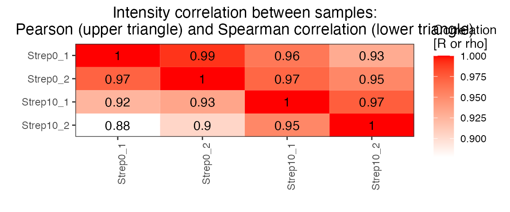
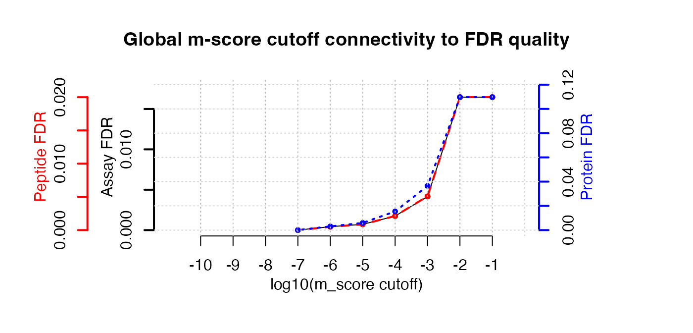

SWATH2stats example script
Source:vignettes/SWATH2stats_example_script.Rmd
SWATH2stats_example_script.RmdExample R code showing the usage of the SWATH2stats package. The data processed is the publicly available dataset of S.pyogenes (Röst et al. 2014) (http://www.peptideatlas.org/PASS/PASS00289). The results file ‘rawOpenSwathResults_1pcnt_only.tsv’ can be found on PeptideAtlas (ftp://PASS00289@ftp.peptideatlas.org/../Spyogenes/results/). This is a R Markdown file, showing the result of processing this data. The lines shaded in grey represent the R code executed during this analysis.
The SWATH2stats package can be directly installed from Bioconductor using the commands below (http://bioconductor.org/packages/devel/bioc/html/SWATH2stats.html).
if (!require("BiocManager")) install.packages("BiocManager") BiocManager::install("SWATH2stats")
Part 1: Loading and annotation
Load the SWATH-MS example data from the package, this is a reduced file in order to limit the file size of the package.
library(SWATH2stats) library(data.table) data('Spyogenes', package = 'SWATH2stats')
Alternatively the original file downloaded from the Peptide Atlas can be loaded from the working directory.
data <- data.frame(fread('rawOpenSwathResults_1pcnt_only.tsv', sep='\t', header=TRUE))
Extract the study design information from the file names. Alternatively, the study design table can be provided as an external table.
Study_design <- data.frame(Filename = unique(data$align_origfilename)) Study_design$Filename <- gsub('.*strep_align/(.*)_all_peakgroups.*', '\\1', Study_design$Filename) Study_design$Condition <- gsub('(Strep.*)_Repl.*', '\\1', Study_design$Filename) Study_design$BioReplicate <- gsub('.*Repl([[:digit:]])_.*', '\\1', Study_design$Filename) Study_design$Run <- seq_len(nrow(Study_design)) head(Study_design)
## Filename Condition BioReplicate Run
## 1 Strep0_Repl1_R02/split_hroest_K120808 Strep0 1 1
## 2 Strep0_Repl2_R02/split_hroest_K120808 Strep0 2 2
## 3 Strep10_Repl1_R02/split_hroest_K120808 Strep10 1 3
## 4 Strep10_Repl2_R02/split_hroest_K120808 Strep10 2 4The SWATH-MS data is annotated using the study design table.
data.annotated <- sample_annotation(data, Study_design, column_file = "align_origfilename")
Remove the decoy peptides for a subsequent inspection of the data.
data.annotated.nodecoy <- subset(data.annotated, decoy==FALSE)
Part 2: Analyze correlation, variation and signal
Count the different analytes for the different injections.
count_analytes(data.annotated.nodecoy)
## run_id transition_group_id FullPeptideName ProteinName
## 1 Strep0_1_1 10229 8377 1031
## 2 Strep0_2_2 9716 7970 1003
## 3 Strep10_1_3 8692 7138 943
## 4 Strep10_2_4 8424 6941 910Plot the correlation of the signal intensity.
correlation <- plot_correlation_between_samples(data.annotated.nodecoy, column.values = 'Intensity')
## Warning: Use of `data.plot$value` is discouraged. Use `value` instead.
Plot the correlation of the delta_rt, which is the deviation of the retention time from the expected retention time.
correlation <- plot_correlation_between_samples(data.annotated.nodecoy, column.values = 'delta_rt')
## Warning: Use of `data.plot$value` is discouraged. Use `value` instead.
Plot the variation of the signal across replicates.
variation <- plot_variation(data.annotated.nodecoy)

variation[[2]]
## Condition mode_cv mean_cv median_cv
## 1 Strep0 0.2280372 0.2545450 0.2351859
## 2 Strep10 0.1706934 0.2947144 0.2592725Plot the total variation versus variation within replicates.
variation_total <- plot_variation_vs_total(data.annotated.nodecoy)

variation_total[[2]]
## scope mode_cv mean_cv median_cv
## 1 replicate 0.2209867 0.2728681 0.2438041
## 2 total 0.2655678 0.3439050 0.3139993Calculate the summed signal per peptide and protein across samples.
peptide_signal <- write_matrix_peptides(data.annotated.nodecoy) protein_signal <- write_matrix_proteins(data.annotated.nodecoy) head(protein_signal)
## ProteinName Strep0_1_1 Strep0_2_2 Strep10_1_3 Strep10_2_4
## 1 Spyo_Exp3652_DDB_SeqID_1571119 265206 163326 51831 45021
## 2 Spyo_Exp3652_DDB_SeqID_1579753 185725 150672 21483 144314
## 3 Spyo_Exp3652_DDB_SeqID_1631459 176686 132415 42165 32735
## 4 Spyo_Exp3652_DDB_SeqID_1640263 3310 6617 98550 45169
## 5 Spyo_Exp3652_DDB_SeqID_1709452 852502 747772 503581 504761
## 6 Spyo_Exp3652_DDB_SeqID_17244480 17506 29578 7607 2482Part 3: FDR estimation
Estimate the overall FDR across runs using a target decoy strategy.
par(mfrow = c(1, 3)) fdr_target_decoy <- assess_fdr_overall(data.annotated, n_range = 10, FFT = 0.25, output = 'Rconsole')
 According to this FDR estimation one would need to filter the data with a lower mscore threshold to reach an overall protein FDR of 5%.
mscore4protfdr(data, FFT = 0.25, fdr_target = 0.05)
## Target protein FDR:0.05## Required overall m-score cutoff:0.0017783
## achieving protein FDR =0.0488## [1] 0.001778279Part 4: Filtering
Filter data for values that pass the 0.001 mscore criteria in at least two replicates of one condition.
data.filtered <- filter_mscore_condition(data.annotated, 0.001, n_replica = 2)
## Fraction of peptides selected: 0.67## Dimension difference: 7226, 0Select only the 10 peptides showing strongest signal per protein.
data.filtered2 <- filter_on_max_peptides(data.filtered, n_peptides = 10)
## Before filtering:
## Number of proteins: 884
## Number of peptides: 6594
##
## Percentage of peptides removed: 29.6%
##
## After filtering:
## Number of proteins: 884
## Number of peptides: 4642Filter for proteins that are supported by at least two peptides.
data.filtered3 <- filter_on_min_peptides(data.filtered2, n_peptides = 2)
## Before filtering:
## Number of proteins: 884
## Number of peptides: 4642
##
## Percentage of peptides removed: 3.6%
##
## After filtering:
## Number of proteins: 717
## Number of peptides: 4475Part 5: Conversion
Convert the data into a transition-level format (one row per transition measured).
data.transition <- disaggregate(data.filtered3)
## The library contains 6 transitions per precursor.
##
## The data table was transformed into a table containing one row per transition.Convert the data into the format required by MSstats.
MSstats.input <- convert4MSstats(data.transition)
## One or several columns required by MSstats were not in the data.
## The columns were created and filled with NAs.
## Missing columns: ProductCharge, IsotopeLabelType## IsotopeLabelType was filled with light.## Warning in convert4MSstats(data.transition): Intensity values that were 0, were
## replaced by NAhead(MSstats.input)
## ProteinName PeptideSequence PrecursorCharge
## 1 Spyo_Exp3652_DDB_SeqID_1571119 AEAAIYQFLEAIGENPNR 3
## 2 Spyo_Exp3652_DDB_SeqID_1571119 AEAAIYQFLEAIGENPNR 3
## 3 Spyo_Exp3652_DDB_SeqID_1571119 AEAAIYQFLEAIGENPNR 3
## 4 Spyo_Exp3652_DDB_SeqID_1571119 AEAAIYQFLEAIGENPNR 3
## 5 Spyo_Exp3652_DDB_SeqID_1571119 AHIAYLPSDGR 2
## 6 Spyo_Exp3652_DDB_SeqID_1571119 AHIAYLPSDGR 2
## FragmentIon ProductCharge IsotopeLabelType Intensity
## 1 105801_AEAAIYQFLEAIGENPNR/3_y6 NA light 4752
## 2 105801_AEAAIYQFLEAIGENPNR/3_y6 NA light 6144
## 3 105801_AEAAIYQFLEAIGENPNR/3_y6 NA light 3722
## 4 105801_AEAAIYQFLEAIGENPNR/3_y6 NA light 6624
## 5 118149_AHIAYLPSDGR/2_y8 NA light 4036
## 6 118149_AHIAYLPSDGR/2_y8 NA light 1642
## BioReplicate Condition Run
## 1 2 Strep0 2
## 2 1 Strep10 3
## 3 2 Strep10 4
## 4 1 Strep0 1
## 5 1 Strep0 1
## 6 1 Strep10 3Convert the data into the format required by mapDIA.
mapDIA.input <- convert4mapDIA(data.transition) head(mapDIA.input)
## ProteinName PeptideSequence
## 1 Spyo_Exp3652_DDB_SeqID_1571119 AEAAIYQFLEAIGENPNR
## 2 Spyo_Exp3652_DDB_SeqID_1571119 AHIAYLPSDGR
## 3 Spyo_Exp3652_DDB_SeqID_1571119 EEFTAVFK
## 4 Spyo_Exp3652_DDB_SeqID_1571119 EKAEAAIYQFLEAIGENPNR
## 5 Spyo_Exp3652_DDB_SeqID_1571119 EQHEDVVIVK
## 6 Spyo_Exp3652_DDB_SeqID_1571119 LTSQIADALVEALNPK
## FragmentIon Strep0_1 Strep0_2 Strep10_1 Strep10_2
## 1 105801_AEAAIYQFLEAIGENPNR/3_y6 6624 4752 6144 3722
## 2 118149_AHIAYLPSDGR/2_y8 4036 2405 1642 720
## 3 35179_EEFTAVFK/2_y5 2307 1541 1561 NaN
## 4 28903_EKAEAAIYQFLEAIGENPNR/3_y6 3410 2185 NaN 1984
## 5 73581_EQHEDVVIVK/2_b6 2423 1343 NaN NaN
## 6 115497_LTSQIADALVEALNPK/2_y11 6553 6349 NaN NaNConvert the data into the format required by aLFQ.
aLFQ.input <- convert4aLFQ(data.transition)
## Checking the integrity of the transitions takes a lot of time.
## To speed up consider changing the option.head(aLFQ.input)
## run_id protein_id peptide_id
## 1 Strep0_2_2 Spyo_Exp3652_DDB_SeqID_1571119 AEAAIYQFLEAIGENPNR
## 2 Strep10_1_3 Spyo_Exp3652_DDB_SeqID_1571119 AEAAIYQFLEAIGENPNR
## 3 Strep10_2_4 Spyo_Exp3652_DDB_SeqID_1571119 AEAAIYQFLEAIGENPNR
## 4 Strep0_1_1 Spyo_Exp3652_DDB_SeqID_1571119 AEAAIYQFLEAIGENPNR
## 5 Strep0_1_1 Spyo_Exp3652_DDB_SeqID_1571119 AHIAYLPSDGR
## 6 Strep10_1_3 Spyo_Exp3652_DDB_SeqID_1571119 AHIAYLPSDGR
## transition_id peptide_sequence
## 1 AEAAIYQFLEAIGENPNR 105801_AEAAIYQFLEAIGENPNR/3_y6 AEAAIYQFLEAIGENPNR
## 2 AEAAIYQFLEAIGENPNR 105801_AEAAIYQFLEAIGENPNR/3_y6 AEAAIYQFLEAIGENPNR
## 3 AEAAIYQFLEAIGENPNR 105801_AEAAIYQFLEAIGENPNR/3_y6 AEAAIYQFLEAIGENPNR
## 4 AEAAIYQFLEAIGENPNR 105801_AEAAIYQFLEAIGENPNR/3_y6 AEAAIYQFLEAIGENPNR
## 5 AHIAYLPSDGR 118149_AHIAYLPSDGR/2_y8 AHIAYLPSDGR
## 6 AHIAYLPSDGR 118149_AHIAYLPSDGR/2_y8 AHIAYLPSDGR
## precursor_charge transition_intensity concentration
## 1 3 4752 ?
## 2 3 6144 ?
## 3 3 3722 ?
## 4 3 6624 ?
## 5 2 4036 ?
## 6 2 1642 ?Session info on the R version and packages used.
## R version 4.0.2 (2020-06-22)
## Platform: x86_64-apple-darwin17.0 (64-bit)
## Running under: macOS Catalina 10.15.6
##
## Matrix products: default
## BLAS: /Library/Frameworks/R.framework/Versions/4.0/Resources/lib/libRblas.dylib
## LAPACK: /Library/Frameworks/R.framework/Versions/4.0/Resources/lib/libRlapack.dylib
##
## locale:
## [1] en_US.UTF-8/en_US.UTF-8/en_US.UTF-8/C/en_US.UTF-8/en_US.UTF-8
##
## attached base packages:
## [1] stats graphics grDevices utils datasets methods base
##
## other attached packages:
## [1] data.table_1.13.0 SWATH2stats_1.19.1
##
## loaded via a namespace (and not attached):
## [1] progress_1.2.2 tidyselect_1.1.0 xfun_0.18
## [4] reshape2_1.4.4 purrr_0.3.4 colorspace_1.4-1
## [7] vctrs_0.3.4 generics_0.0.2 htmltools_0.5.0
## [10] stats4_4.0.2 BiocFileCache_1.12.1 yaml_2.2.1
## [13] blob_1.2.1 XML_3.99-0.5 rlang_0.4.7
## [16] pkgdown_1.6.1 pillar_1.4.6 glue_1.4.2
## [19] DBI_1.1.0 rappdirs_0.3.1 BiocGenerics_0.34.0
## [22] bit64_4.0.5 dbplyr_1.4.4 plyr_1.8.6
## [25] lifecycle_0.2.0 stringr_1.4.0 munsell_0.5.0
## [28] gtable_0.3.0 ragg_0.3.1 memoise_1.1.0
## [31] evaluate_0.14 labeling_0.3 Biobase_2.48.0
## [34] knitr_1.30 IRanges_2.22.2 biomaRt_2.44.1
## [37] parallel_4.0.2 curl_4.3 AnnotationDbi_1.50.3
## [40] Rcpp_1.0.5 scales_1.1.1 openssl_1.4.3
## [43] backports_1.1.10 S4Vectors_0.26.1 desc_1.2.0
## [46] farver_2.0.3 systemfonts_0.3.2 fs_1.5.0
## [49] bit_4.0.4 ggplot2_3.3.2 hms_0.5.3
## [52] askpass_1.1 digest_0.6.25 stringi_1.5.3
## [55] dplyr_1.0.2 grid_4.0.2 rprojroot_1.3-2
## [58] tools_4.0.2 magrittr_1.5 RSQLite_2.2.1
## [61] tibble_3.0.3 crayon_1.3.4 pkgconfig_2.0.3
## [64] ellipsis_0.3.1 prettyunits_1.1.1 assertthat_0.2.1
## [67] rmarkdown_2.4 httr_1.4.2 R6_2.4.1
## [70] compiler_4.0.2